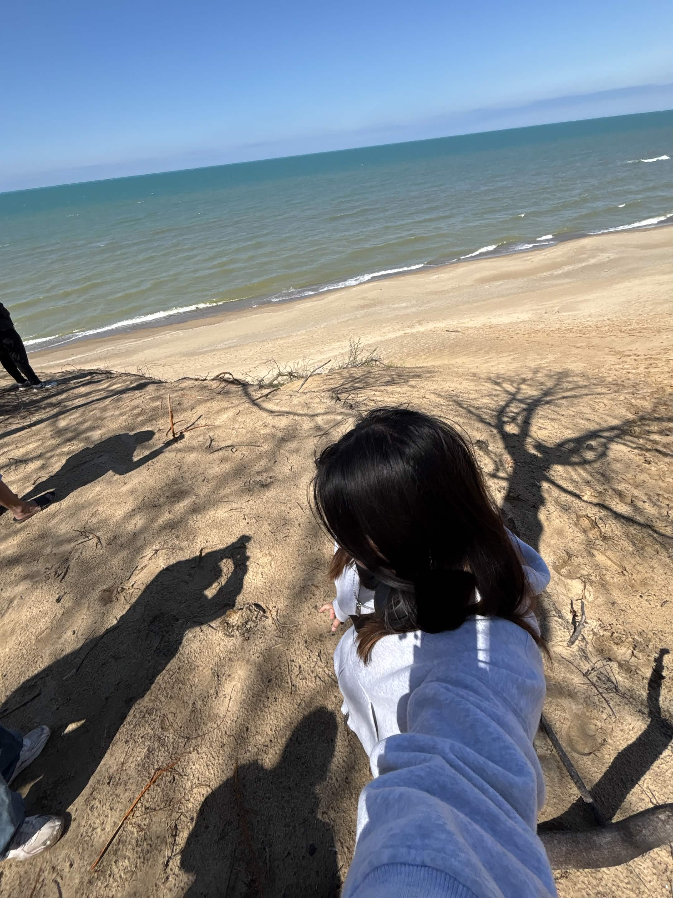

Hello, my name is Rachel Tam and I am a student ar the Univeristy of Illinois Urbana-Champaign(UIUC). Currently, I'm a Junior in Information Science and asprising UX/UI designer. I have always loved arts and design since I was a child, which led me to this pathway. Moving forward, I hope to continue growing in the field and learn more skills. I plan to create many meaningful designs and leave a positive impact through my work.
For my previous assignment, I had to pick a digital object related to my topic and create a webpage about it. From there, I listed some data I found relevant about my object.
Click here to view my digital object